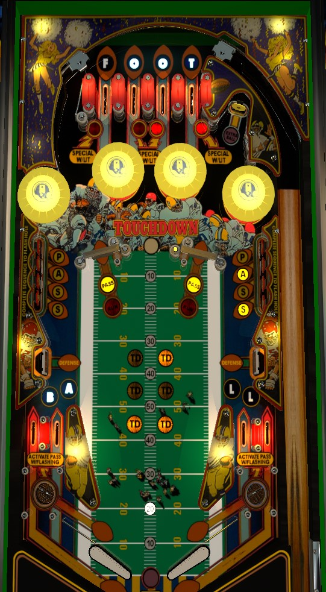

Not to be confused with Touchdown (Williams, 1967), Pro Football (Gottlieb, 1973), or Gridiron (Gottlieb, 1977).
Shoot spinners for 1,000 points a spin. Every 5 spins awards 10 football yards, which is worth 1,000 points in bonus. The left spinner is preferred since it puts the ball into the top lanes rather than inviting a possible dangerous return off the extra ball target. Completing a bank of Pass targets will start flashing one of the lower saucers; enter that saucer to light the opposite spinner for 10,000 points and a bonus advance per spin, but only for one rip. Collecting the Football letters from around the playfield lights a special at the top lanes. Scoring three Touchdowns (30 sets of 10 football yards) lights the extra ball target behind the right spinner.
There are 8 rollover lanes in the game: 4 at the top of the table, and 2 on each side of the bottom of the table. Together, they are treated as one set of eight lanes and spell Football. Roll through a lit lane to collect it, unlighting that lane and scoring 10,000 points. Rolling through an already unlit lane scores 1,000 points. The right flipper can be used to rotate which lanes are lit across the full set of eight. Collecting all 8 letters in Football on a single ball lights one of the top lanes for a Special, which can also be moved with lane change. Progress on Football letters is reset between balls.
In the VPX recreation of the table, the right flipper does not always activate lane change. In general, it seems like the left flipper needs to be pressed to "charge up" the lane change before the right flipper can be used to move the lit lanes. I am not sure if this is a bug in the VPX or a difficulty setting in the original game.
The pop bumpers below the top lanes always score 1,000 points each.
The two spinners start out lit for Run. When lit for Run, spinners score 1,000 points per spin, and every 5 spins is worth 10 football yards. Collecting 100 football yards is worth a Touchdown. Touchdowns are not worth any points on their own, but they do come with electronic applause. Every 10 football yards collected is worth 1,000 points in end of ball bonus. Up to 6 touchdowns can be stored, for a total of 69,000 points of end of ball bonus. Earning 3 touchdowns lights the standup target behind the right spinner for extra ball. The left spinner, meanwhile, leads back to the top of the table for more top lanes, which is generally the safest thing to do.
The banks of standup targets on the sides of the game spell Pass. Whether solidly lit or flashing, these targets score 5,000 points. Hitting a flashing target to light it solidly. Lighting all 4 targets causes the bottom saucer on the same side of the playfield as the completed bank to start flashing. Making a flashing saucer lights the spinner on the opposite side of the table for Pass. When a spinner is lit for Pass, it scores 10,000 points and 10 football yards per spin, but only for one rip of the spinner and only until the next Touchdown is scored. This can be worth okay points, but it's generally not worth the effort. All progress on Pass targets and any flashing saucer(s) are lost if the ball drains.
In the VPX recreation of the table, the boosted scoring and football yards from spinners lit for Pass lasts for only a single spin rather than one full shot at the spinner. Once agan, I am not sure if this is a bug in the virtual recreation or a difficulty setting.
The large pad targets on the sides of the table just above the slingshots are the Defenders. They are not actually targets, and score no points; in effect, they are additional slingshots trying to send the ball out of control.
There are two bottom lanes on each side of the table, which combined spell Ball in Football. Below these lanes are a selection of pins, and one saucer on each side. The saucer is centered underneath the two lanes on a given side, meaning both lanes can feed that saucer; however both lanes can also feed a ball that skirts around the saucer and drops into the drain. The saucer scores 10,000 points. If the saucer is flashing because the Pass targets on that side of the table have been completed, it will light the opposite spinner for Pass mode as well. Once the saucer is done giving out awards, it will pop the ball down the rest of the "in lane" toward the flippers. Notice that there is no one way gate behind the flipper; if you simply hold the flipper up to trap the ball, the ball can roll up the "in lane" rail and either end up in the saucer itself or avoid the saucer and drop into the drain.
Every 10 football yards collected are worth 1,000 points in end of ball bonus. 10 football yards are earned on every 5th spin of a spinner in Run mode, and every single spin of a spinner in Pass mode. A Touchdown is worth 10,000 points in bonus. Max bonus is 69,000 points. There is no bonus multiplier or mid-ball bonus collect. All base bonus is carried over from ball to ball. However, compared to the value of the spinners themselves, the end of ball bonus is rarely a meaningful portion of final scores.
I believe that in competition/novelty play, both extra balls and specials score 50,000 points.